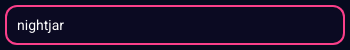
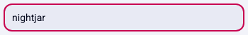
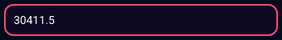
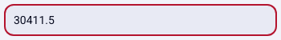
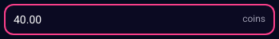
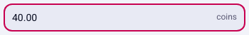

Text field
One line of typed text: a name, an amount, an e-mail, a nonce. It takes the dark tile of every control, the button's corner and a hairline at rest; under focus the edge turns pink. Everything on this page is drawn by design/system/components/text-field.css through index.css, the same file a screen will load.
Anatomy
| Part | Class or element | What to change there |
|---|---|---|
| The box | .input on an <input> | the tile's fill, the 1px edge, the button's 12px corner, the label size of type; it fills its container's width |
| Size | .input--l | height and type: M 40 at the label size, L 52 at the text size |
| Emphasis | .input--bare | no plate, no edge, centred figures: for a field inside a control that draws its own (the number stepper) |
| The typed text | .input, ::placeholder | white for what is typed, the muted grey for the hint |
| Read-only | [readonly] | the menu's ground and the body ink: a value to read and copy, not to change |
| A unit | .input-unit with a <span> | the wrapper owns the plate and the edge, the span is the word at the end (coins, days) |
| Refusal | [aria-invalid="true"] | the red ring inside the box; set by the product's script, never by a class (D-260) |
Variants and sizes
Three axes. Each carries its rule, so the next screen picks by the rule. Heights are read from the rendered fields, not from the stylesheet; the width is always the container's.
- Size = the density of the container, never the field's importance. M 40 is a field in a panel or a form, L 52 is an amount, the figure of a zone (the deposit's amount, the cash out). The size follows the Button's, so a field and the act beside it share a height.
- Emphasis = who draws the plate. Boxed is the field's own. Bare is for a field inside a control that already draws one, and it is never used on its own.
- Content = a unit or none. A unit is a word the field cannot say itself: the currency of an amount, the days of a limit.
- Width = the layout, not the field. A field takes the whole width of its cell; a grid or a row sets how wide that is.
| Emphasis | M | L | Where it stands |
|---|---|---|---|
| Boxed | a seed, a nonce, an e-mail; the amount in the deposit | ||
| With a unit | coins |
coins |
the filter drawer's prices, the limits |
| Bare | inside the number stepper; it has no plate to measure by, so it is one size | ||
When to use
A text field takes one line the person types: a number, a name, a seed, an address. Its label is not its own: a Field (the organism) puts a noun above it that names what to enter ("Billing email", "Amount, in US dollars", microcopy 4.1-19 and 4.1-21) and the reason below it when it refuses. A field stays live while it refuses and says why beside itself (D-58), so a person can correct it where they are. The unit, where there is one, is part of the plate and not a second control.
Rule and anti-rule
Use it
The Verify form's nonce: one line, a number, a label above it, and when it holds a decimal point the red ring and "A nonce is a whole number. This one has a decimal point in it." beside it (microcopy 1.2-35).
Take another component
Several lines or a pasted block is a Text area. A figure on a scale where the place matters more than the digits is a Range. Choosing one of a few is a Segmented control, one from a long list a Popover menu, a yes or a no a Checkbox or a Switch. An amount with its presets is the Amount field, which holds this one.
States
Live at rest, on this page's theme: point at them, type in them, reach them with Tab. A text field always shows its focus when it is focused, with the keyboard or the pointer.
A nonce is a whole number. This one has a decimal point in it.
Snapshots of the same instances, dark on the left and light on the right, taken with reduced motion so each shows the face the state settles on. The base set is shot once on the M field; after it, only a named difference.


--text-field-line-focus

--line-error

--line-error over --text-field-line-focus

--text-field-line-focus- The same answer, said once: the L field answers as the M field does; the Text area (own page) answers as this one does. A field has no hover face:
kit.cssdraws none, and whether it should answer the pointer waits for the atoms' gate. - Inside a unit the wrapper's edge takes the ring, the field inside draws none. A refused field keeps its red ring while it is focused.
- No disabled look: a field stays live and refuses with its reason (D-58); only the Button draws disabled (D-239, D-263).
node design/kit/tools/shoot-states.js http://localhost:8765/ text-field # re-shoot after a change to text-field.css or its tokens node design/kit/tools/shoot-states.js http://localhost:8765/ text-field --check # step 9: fails if a snapshot drifted
In the code
| Token | Kind | Dark | Light |
|---|
Read live from tokens.css. Geometry (--size-button-m, --size-button-l, --radius-button, --space-3), type and the focus ring width come straight from the primitives. --text-field-line-focus is the one component token: the pink ring a field has drawn since stage 07, which no line role holds.
File: design/system/components/text-field.css, loaded by design/system/index.css in the atoms' group.
<input class="input" id="nonce" type="text" inputmode="numeric" aria-describedby="nonce-why"> <input class="input input--l" id="amount" type="text" inputmode="decimal" value="40.00"> <div class="input-unit"><input class="input" type="text" inputmode="decimal"><span>coins</span></div> <!-- refused: the script sets aria-invalid="true" and aria-describedby, and writes the reason beside it -->
Stands on: the catalogue (the filter drawer), Deposit, My items, Provably fair, Responsible play. Until step 8 those screens still read kit.css; step 6 moves their markup onto this file's forms by the rename map.